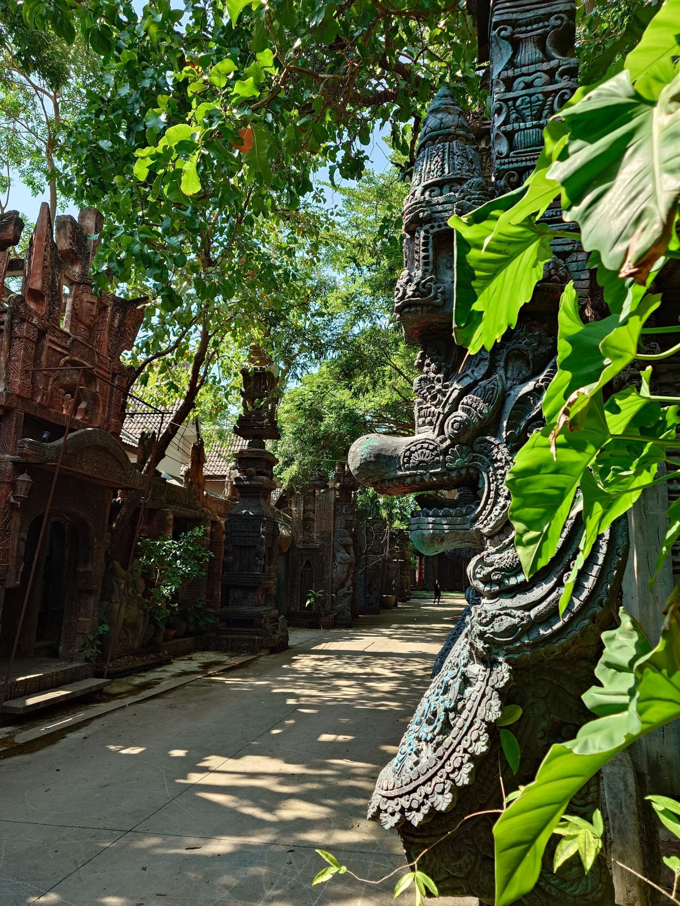
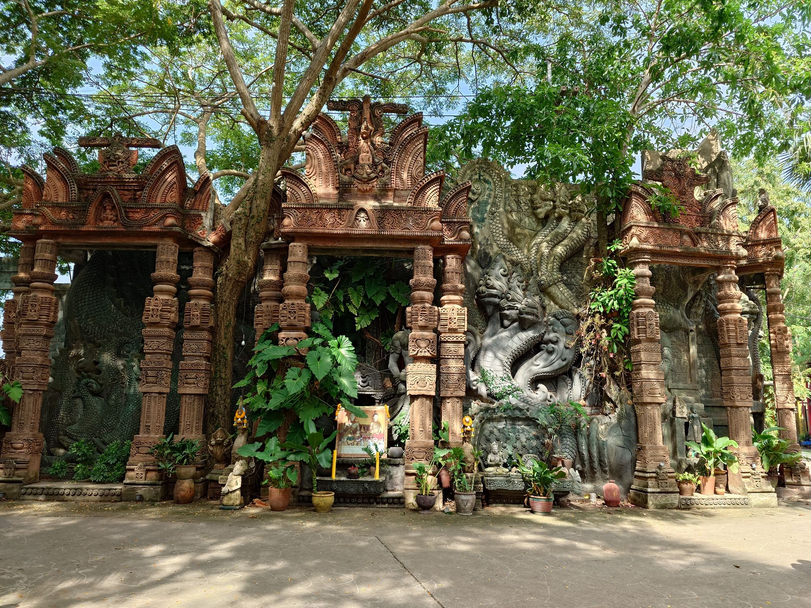
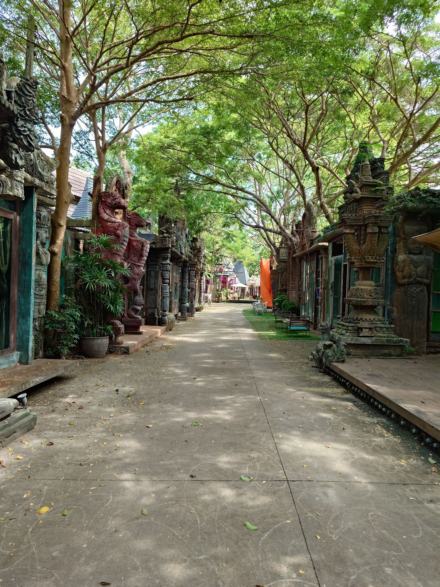
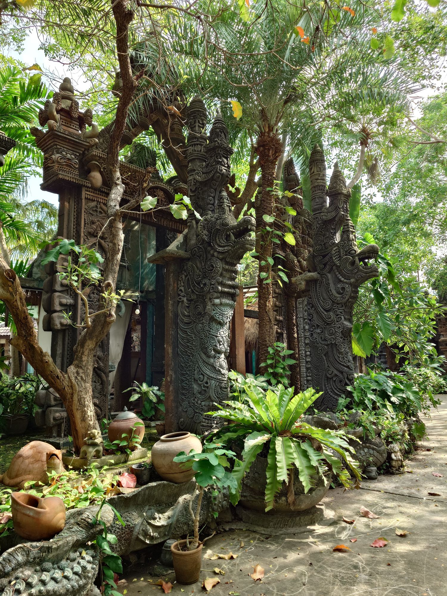
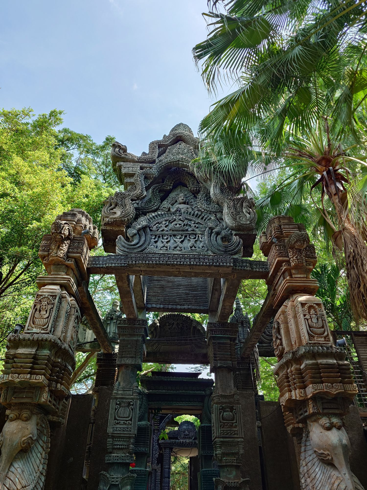
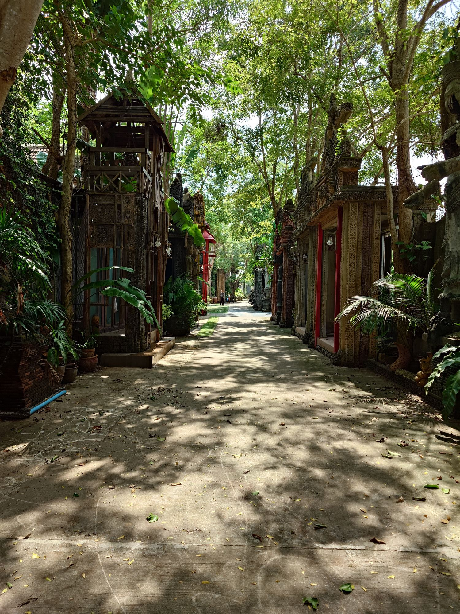
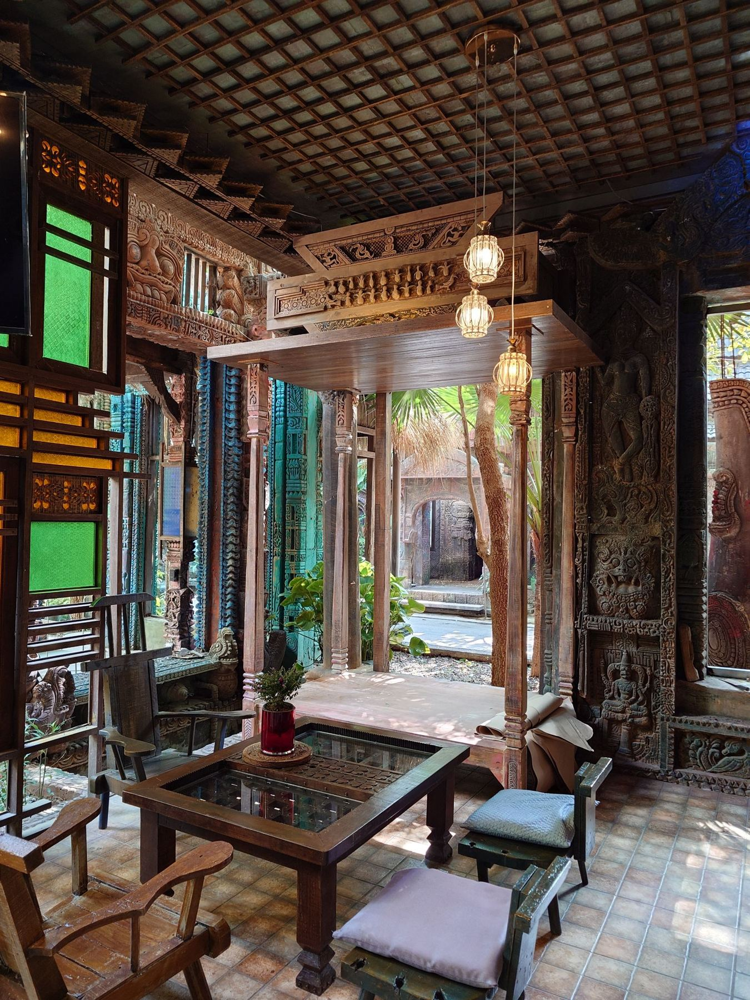
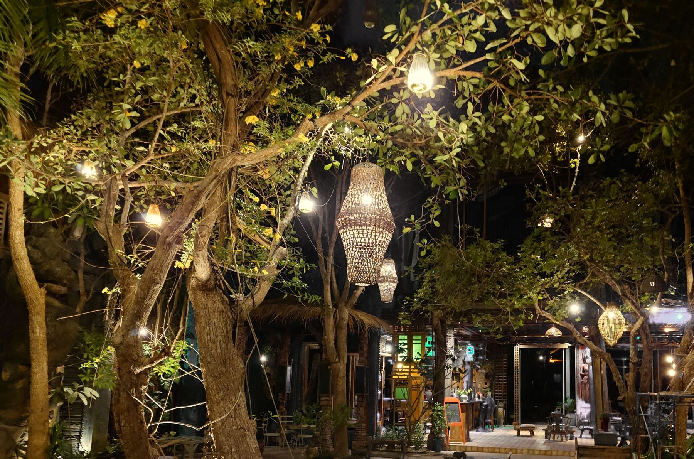
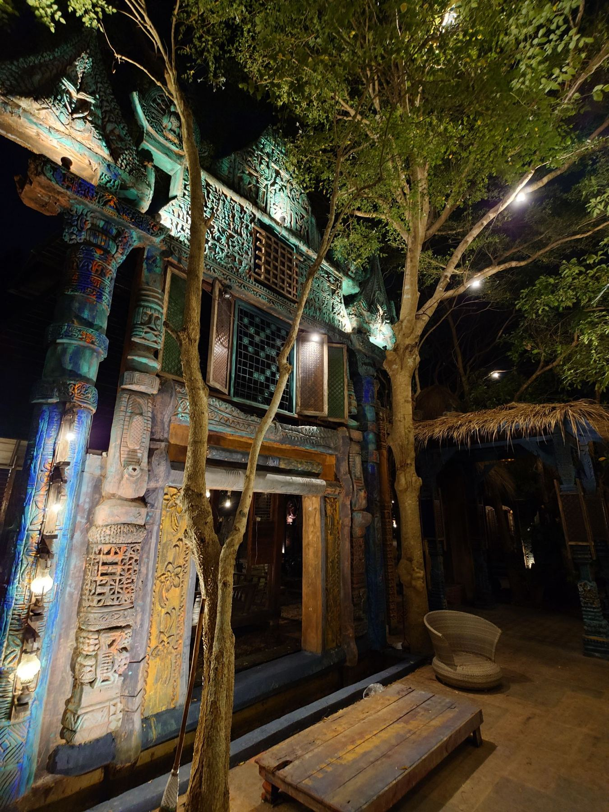
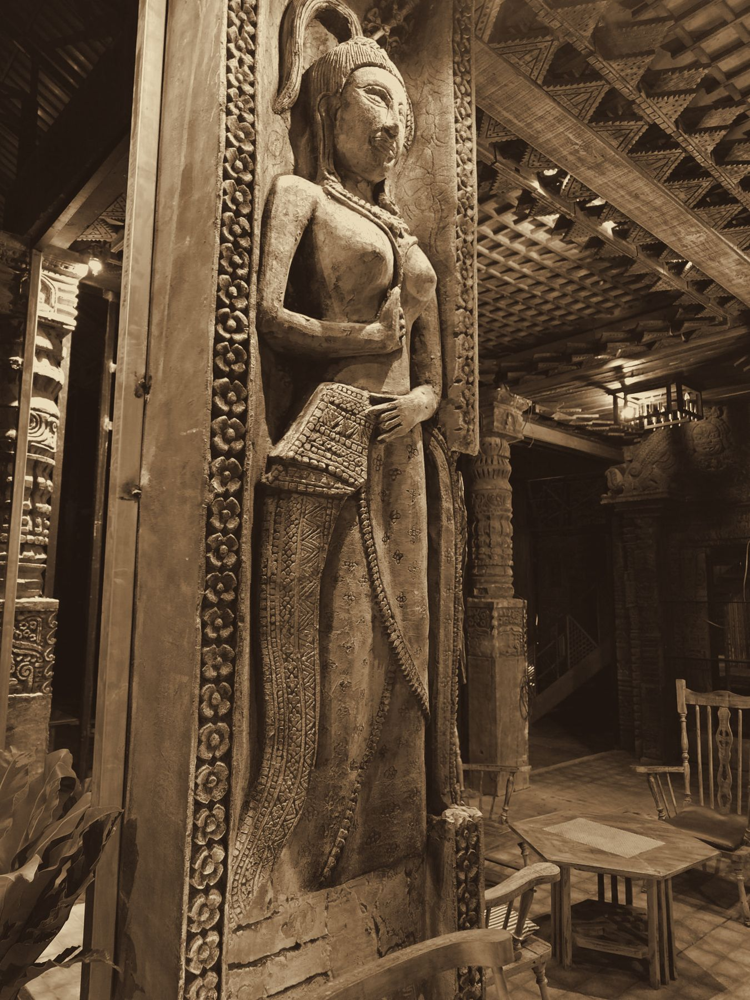

Khema KaMuLour
เขมา · พูลวิลล่าส่วนตัว พัทยา
Private pool villas in a Khmer-style garden, south of Pattaya. Reopening after renovation.
Khema is an old Pali word for safety, and for peace.
What people came for
Before it closed for renovation, this garden had more than two hundred reviews online. We read them. The same three things come up again and again.

A place that looks like nowhere else
Guests tried to name the style and couldn't settle on one. Thai, Khmer, something older. Gates, guardians and walls carved by hand, all of it photographed endlessly.

Quiet, under old trees
It sits away from the city, and people noticed. Few crowds, long shade, a lane where the loudest thing is the leaves.

Room for the people you came with
Large villas, each with its own pool, built for families and groups of friends who want to be together and still have space.
And what we heard
The same reviews were honest about the rest. The garden was beautiful and the care was not always there. Rooms that needed mending. Not enough hands. Nights that felt dark rather than calm.
So the renovation is not about changing what people loved. The carvings, the shade and the pools stay. What is being rebuilt is everything around them: the villas, the comfort inside them, and the way the garden is looked after, day and night.
A place that was always beautiful, learning to be cared for again.
Twenty years of shade
Khema KaMuLour was built twenty years ago in the manner of a Khmer temple garden: carved teak and stone, guardians at the paths, roofs of thatch. Since then the trees have grown up through it and the carvings have darkened. That is the part no renovation could make, and the part we are keeping.

- ShadeShade all day, from trees that grew up with the garden.
- TouchCarved teak and stone, cool under the hand.
- SoundLeaves moving overhead.
- LightLanterns in the branches after dark.


In the morning the courtyard is all shade and moving light.
When the lanterns are lit
The nights were the part guests liked least. So the night is where the light goes. Woven lanterns in the branches, warm light on the carved gates, a garden that turns gold and quiet instead of dark.



The villas
Multi-bedroom pool villas for families and groups of friends, each behind its own carved doors, each with its own pool. They are being rebuilt now. We will show them here when they are finished, not before.
KhemaKaMuLour (Khema KaMuLour) เป็นพูลวิลล่าส่วนตัวสไตล์ขอมโบราณในสวนร่มรื่น ย่านห้วยใหญ่ พัทยา เหมาะสำหรับครอบครัวและกลุ่มเพื่อน มีสระว่ายน้ำส่วนตัวในทุกหลัง ขณะนี้อยู่ระหว่างการรีโนเวทเพื่อกลับมาเปิดให้บริการ
Photographs, room plans and rates will be added at opening. · รูปภาพวิลล่า แปลนห้อง และอัตราค่าเข้าพักจะอัปเดตเมื่อพร้อมเปิดให้บริการ
Where it is
Huai Yai, Bang Lamung, Chonburi. South of Pattaya, inland from Jomtien, away from the noise of the city. Come by car; the quiet is the reason it is here.
26/3 เทศบาล 1 ตำบลห้วยใหญ่ อำเภอบางละมุง จังหวัดชลบุรี 20150 (โซนห้วยใหญ่ พัทยาใต้)
Write to us
Tell us when you would like to come and how many of you there are. We will reply when booking opens.
ติดต่อสอบถามข้อมูลเบื้องต้นหรือการเปิดรับจองพูลวิลล่า